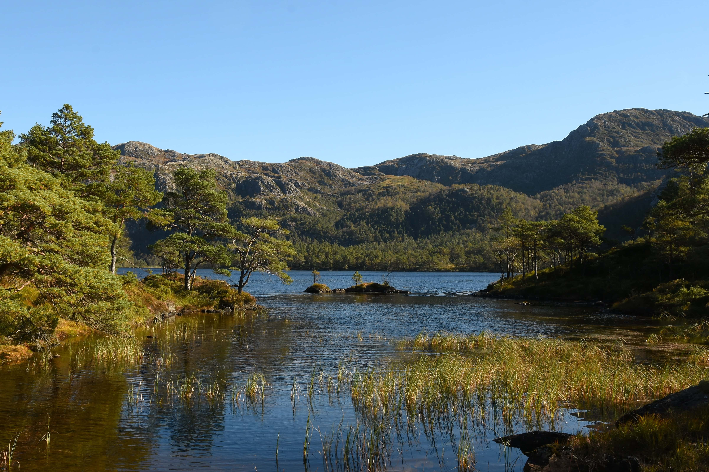

Plano Clima exigirá corte bilionário de emissões até 2030
O novo Plano Clima discutido pelo governo federal estabelece uma das metas ambientais mais ambiciosas já assumidas pelo Brasil: reduzir as emissões nacionais de gases de efeito estufa para cerca de 1,2 bilhão de toneladas de CO₂ equivalente até 2030.
